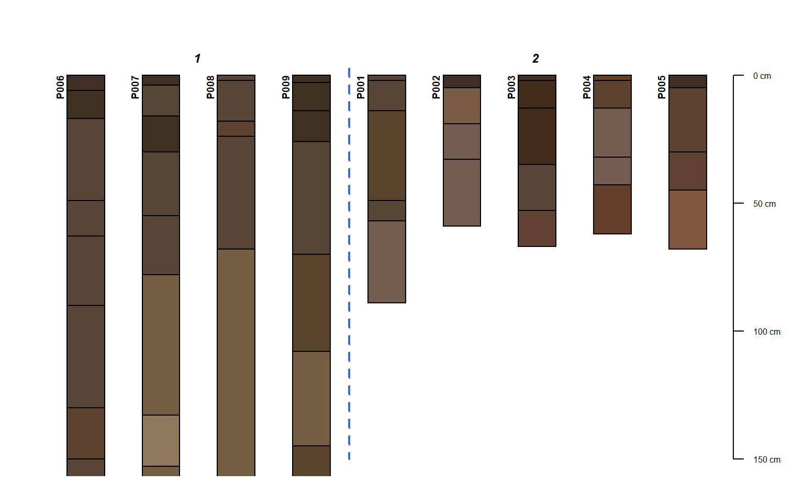
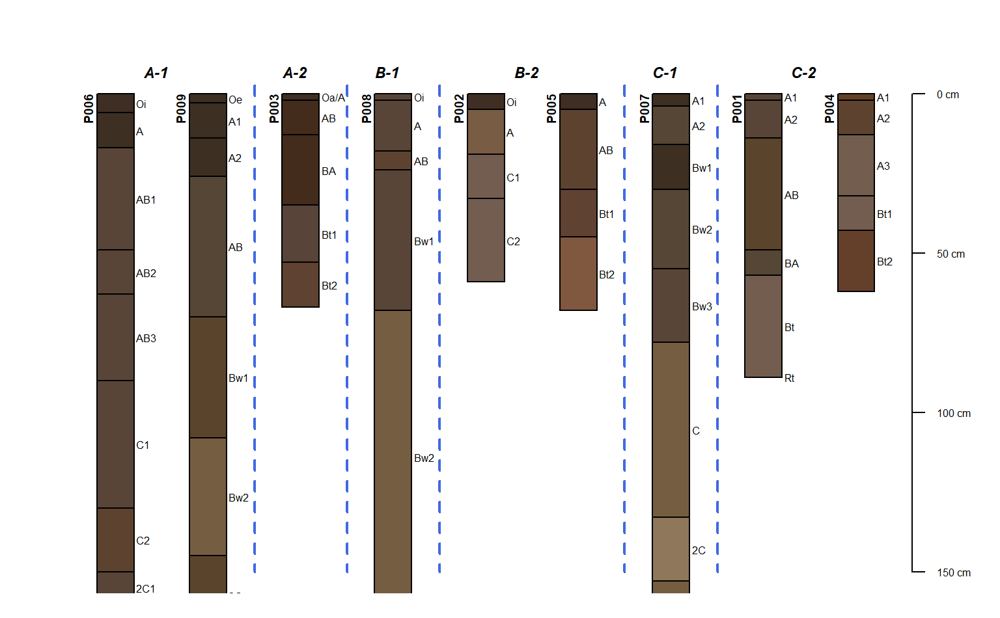
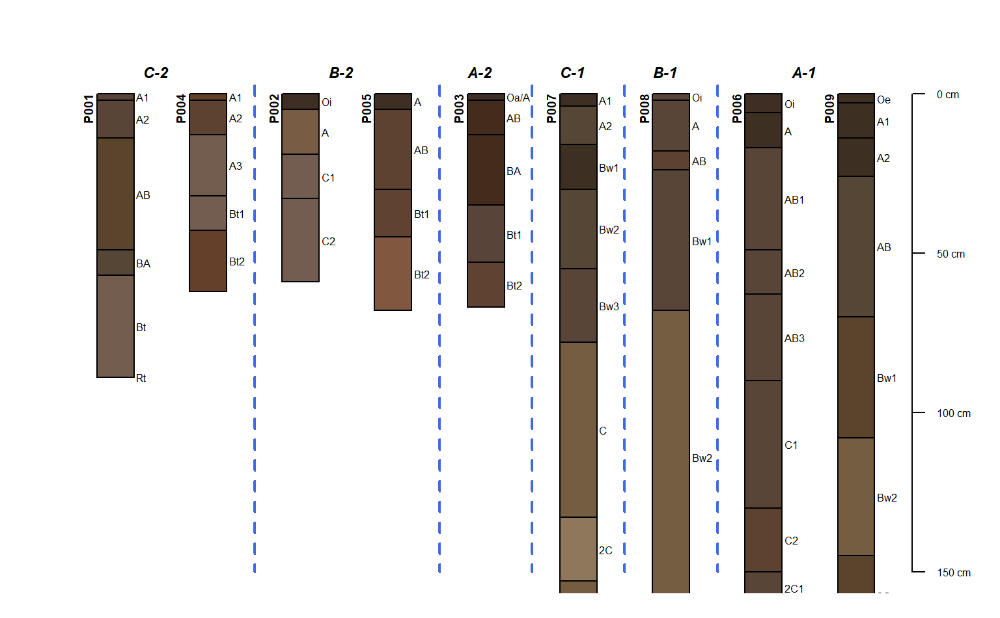
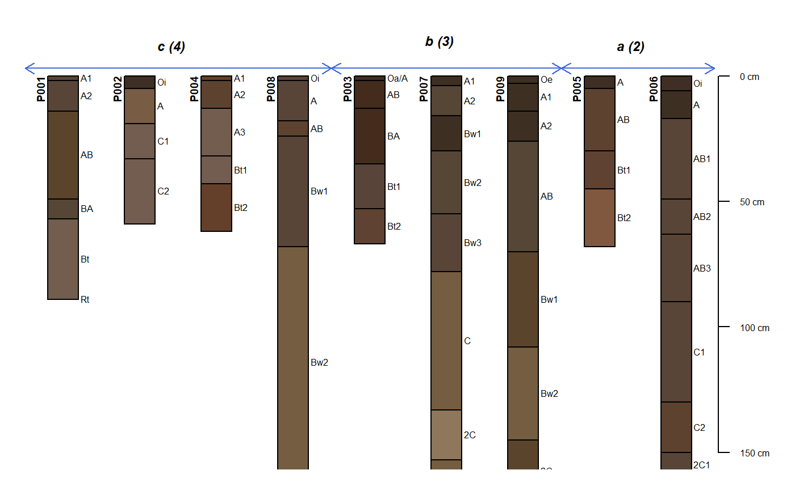

groupedProfilePlot.RdPlot a collection of soil profiles, sorted and labeled by group.
groupedProfilePlot(x, groups, group.name.offset = -5, group.name.cex = 0.75, group.line.col = "RoyalBlue", group.line.lwd = 2, group.line.lty = 2, break.style='line', arrow.offset=group.name.offset + 5, arrow.length=0.1, ...)
| x | a |
|---|---|
| groups | the name of a site-level attribute that defines groups, factor levels will influence plotting order |
| group.name.offset | vertical offset for group names, single numeric value or vector of offsets |
| group.name.cex | font size for group names |
| group.line.col | color for line that splits groups |
| group.line.lwd | width of line that splits groups |
| group.line.lty | style of line that splits groups |
| break.style | style of group boundaries: "line", "arrow", "both" |
| arrow.offset | vertical offset for "arrow" style boundaries, single numeric value or vector of offsets |
| arrow.length | value passed to |
| … | further arguments to |
The ordering of groups can be adjusted by converting the site-level attribute used for grouping into a factor and explicitly setting the levels.
# sample data data(sp1) # convert colors from Munsell to hex-encoded RGB sp1$soil_color <- with(sp1, munsell2rgb(hue, value, chroma)) # promote to SoilProfileCollection depths(sp1) <- id ~ top + bottom site(sp1) <- ~ group # plot profiles, sorted and annotated by 'group' par(mar=c(1,1,1,1)) groupedProfilePlot(sp1, groups='group', max.depth=150, group.name.offset = -12, id.style='side')#># make fake site-level attribute and adjust levels sp1$new.group <- sample(letters[1:3], size=length(sp1), replace=TRUE) # tabulate pedons / group tab <- table(sp1$new.group) # sort large -> small tab <- sort(tab, decreasing = TRUE) # set levels based on sorted tabulation # assign custom labels sp1$new.group <- factor(sp1$new.group, levels=names(tab), labels=paste0(names(tab), ' (', tab, ')')) groupedProfilePlot(sp1, groups='new.group', max.depth=150, group.name.offset = -10, id.style='side')#># offsets can be set using a vector of values, recycled as needed groupedProfilePlot(sp1, groups='new.group', max.depth=150, group.name.offset=c(-10, -5), id.style='side')#># annotate with arrows instead of vertical lines groupedProfilePlot(sp1, groups='new.group', max.depth=150, group.name.offset=c(-10, -12), break.style='arrow', arrow.offset=-3, group.line.lty = 1, group.line.lwd = 1, id.style='side')#># NOT RUN { # more complete example using data from soilDB package data(loafercreek, package='soilDB') par(mar=c(1,1,1,1)) # lines groupedProfilePlot(loafercreek, groups='hillslope_pos', group.name.cex = 0.5, group.name.offset = -10) # arrows groupedProfilePlot(loafercreek, groups='hillslope_pos', group.name.cex = 0.5, group.name.offset = -10, break.style ='arrow', group.line.lty = 1, group.line.lwd = 1) # both groupedProfilePlot(loafercreek, groups='hillslope_pos', group.name.cex = 0.5, group.name.offset = -10, break.style ='both', group.line.lty = 1, group.line.lwd = 1) # }